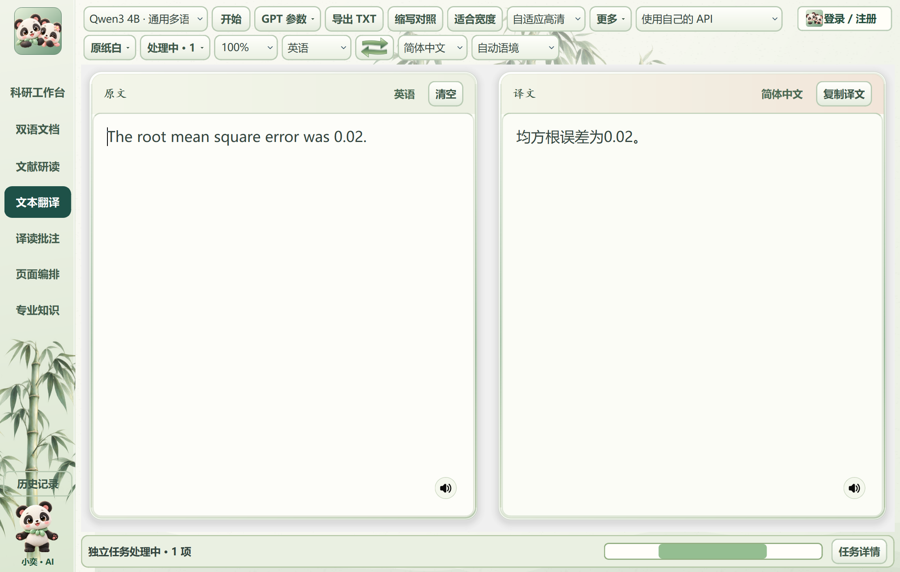

1.43.29 实机验收
1.43.29 实际安装测试
| 实际测试 | 完成页数 | 回填/应译区域 | PDF阻断问题 | 耗时（分钟） |
|---|---|---|---|---|
| 15页原失败任务，真实译文复检补译 | 15/15 | 148/148 | 0 | 4.87 |
| 8页新文档，本地翻译 | 8/8 | 114/114 | 0 | 8.84 |
15页复用真实旧译文，由本地Qwen3 4B复检补译；8页使用本地Qwen3 4B，没有该文献的既有译文。两篇均完成，原件保持原样。耗时仅对应这些样本。
5,028 个生产文件实际安装后逐一相同；245 个应用模块和182个 BabelDOC 模块与冻结源码一致。13组功能回归、55项专门规则回归通过。两次实际文档进程均正常退出。
原始实机截图

自有示例文本，独立实际安装，真实本地推理。私人论文不公开；结构完整性检查之外仍需科学语义核读。